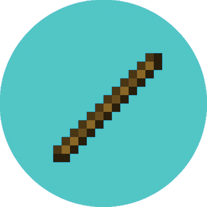

I will release Github and Spitgot page's to some of the software listed here soon.
Also credits to Kevin Haag on Codepen for this popup window, the rest of the site is not coded by anyone else.
Josh's Software
ChessMC (Minecraft plugin)
Under heavy development but close to being done.
MCCore (Stand alone software, client app, multiple servers and multiple MC and proxy plugins)
MCCore is basically a framework (I'm not sure if that's the right word.) Which connects most of what we have and make's communication and coding a lot easier. (e.g. All MC servers can communicate with each other and more easily.)
This also provides a solid bridge for things like Discord, web or apps. Basically it can just let all servers communicate and provide data to each other and things like websites, databases, servers or Android/iOS Apps and more.
Indigo (A.I.)

Indigo is an articifial intelligence based on OpenAI, he will have many roles, one of which is being a 24/7 chat support bot which honestly gives better help and info than an average human.
Indigo as a Discord chat bot is going to be published soon.
TogglePvP (Minecraft plugin)
Simple TogglePvP I once made, just /pvp to toggle PvP with other players.
Simple Global Chat (Minecraft plugin)
Provides Global chat for Networks.
WandQuake (Minecraft plugin)
Rapid minigame based on the OG game Quake most big minigames servers had.
RandomTP (Minecraft plugin)
Simple base version for the RandomTP system. (Still far from done though, I just wrote a very simple version because we needed atleast a semi functional one asap.)
/rtp to randomly teleport.
Bloom-E (Discord bot and A.I.)
Bloom E was a test preparing Indigo.
Support and report system with optional Discord integration (MC plugin.)
Handles and makes easy (All toggleable on/off): Grief reports, Ban appeals, bug reports, player reports, support tickets.
Players can easily make a report or ticket ingame. (Optionially reports get posted in designated staff Discord channels.)
Staff can easily handle reports, ban appeals or tickets ingame.
This plugin does not require a discord bot to send report messages on Discord, however, if you want staff to be able to manage everything on Discord too a bot would need to be invited.
Note, all of these features (e.g. Grief Report, Player Report, Bug Report, will all be released as individual plugins aswell, but I'm not going to name any of them here.
EmeraldMC Discord Bot
Just a basic Discord Bot doing basic Discord Bot things.
Also integrated with MCCore.
EmeraldMC App (Android/Ios)
Currently fully planned out but in development, concept art and more info will come soon.
Staffmode (Minecraft plugin)
As a staff member it's often a bad thing to have operator (or * permissions) at all times. (This can for example automatically give certain ingame benefits.)
This get's rid of that, staff members simply have basic staff commands (e.g. /ban etc) but if they need more perms they just use /staffmode. Whilst in staffmode a staff member has all permissions (except from a few harmful ones.) A staff member can leave staffmode and get their old perms back by simply using /staffmode again.
Also it might be hard to monitor staff members.
This plugin also supports logging all commands executed whilst in staffmode. (This can be toggled in the config. (Still wanna make a command to toggle it manually))
If logging is enabled staff will need to enter a reason for entering staffmode so the command useage becomes /staffmode
I think we are planning on having all staff logs public. (We discussed this in a meeting once.)
MC Bots (JavaScript/NodeJS)
Basically wrote an easy minecraft bot system for multiple reasons.
You can basically spawn and control as many bots as you'd like through code or ingame.
Before a release or big event we need to test if our servers are capable of handling a large numbers of players. This software allows us to simulate hundreds to thousands of players online who all simulate "using" the server. (e.g. running commands etc.)
It also comes in very handy if we need to test certain plugins.
Would also be very to integrate Indigo once it's released and stable.
EmeraldMC (Minecraft Server)
Even though I did not create the game Minecraft, I still consider this one of my largest (software) projects ever.
https://www.emeraldmc.net
More software:
I have much more software, some of which is available on my Github. But these were the ones worth mentioning most.